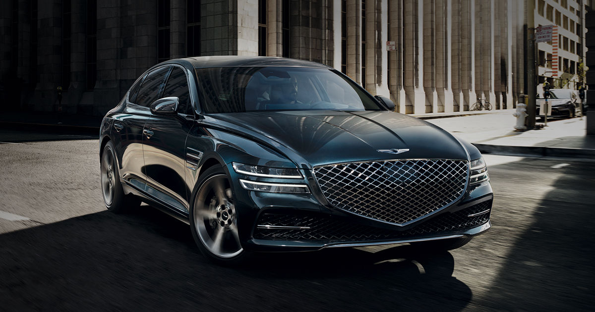
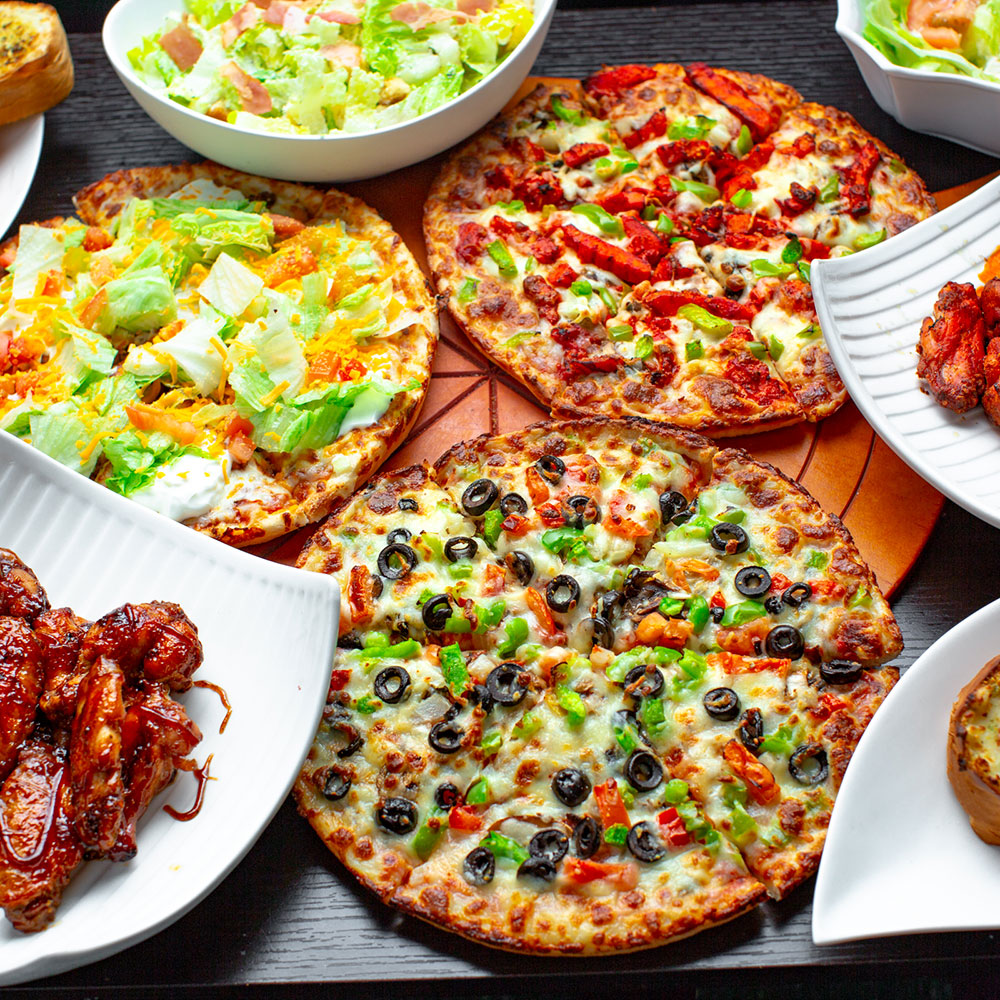

My favourite car is the Genesis G80. The exterior is sleak, whereas the interior is too futuristic for its generation. I see this car as a footstep to the future, which is why I am so invested in its looks. To me, this car is simple but sophisticated at the same time which is why I want it in the future. The reason why this car is my favourite is because of its simplicity, potential, and its unique interior.
My favourite dish is pizza. A spontaneous Italian delicacy, generations old. Pizza is a delcious dish with the perfect balance between a fluffy crust, tangy sauce, and a lavish helping of some mozzerella cheese. As a kid, I have always loved pizza which is why it is still my favourite dish. The memories I have with this are unfathomable, that I will always respect. The perfect twist between three main ingredients makes this dish a tasty delicacy, memorable dish, and a popular choice of favourites.
What makes a pizza delcious...
My favourite TV show is The Office. This sitcom embarks on a journey of hillarious jokes, iconic comedy dialogue, and a relaxing environment. Being the first show I watched, I was hooked all through the 9 seasons of comedy. This show is heard about worldwide, by the iconic characters and humour. A subtle sitcom, but a chaotic masterpiece.